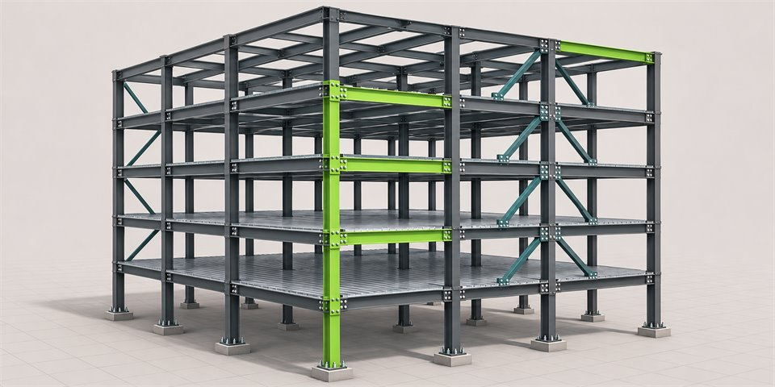
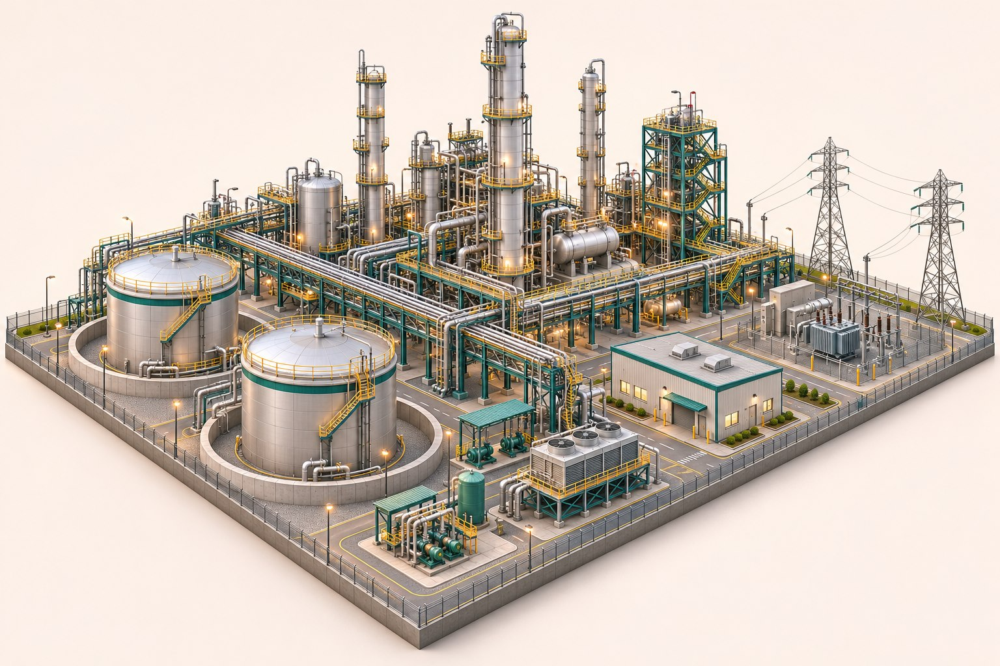
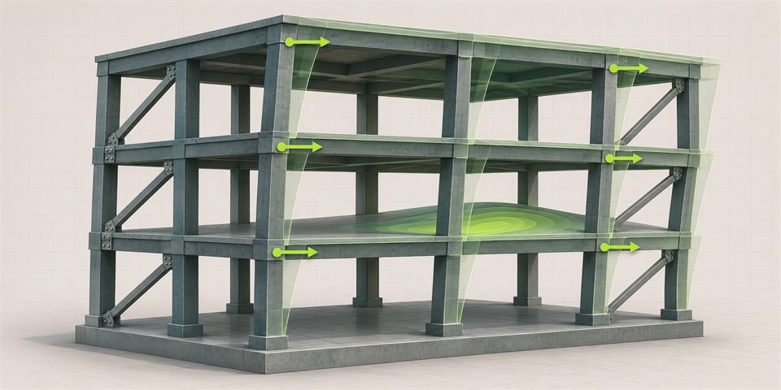
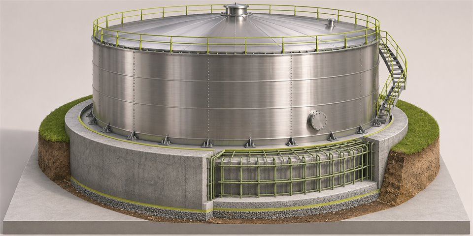
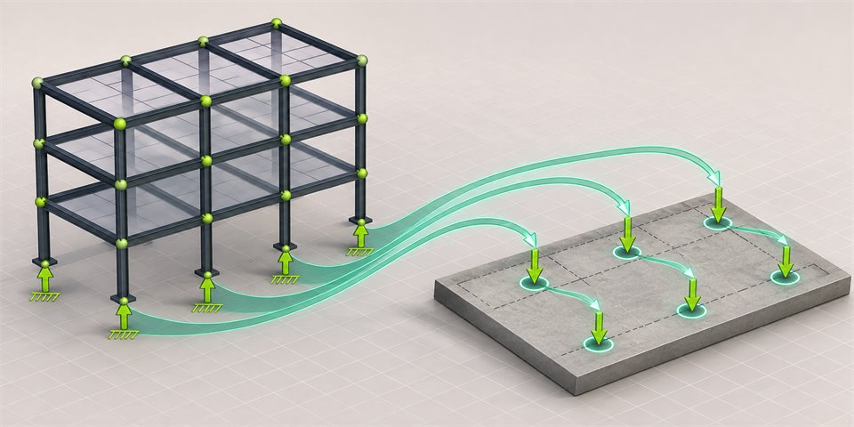
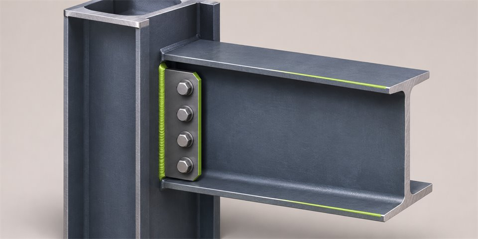
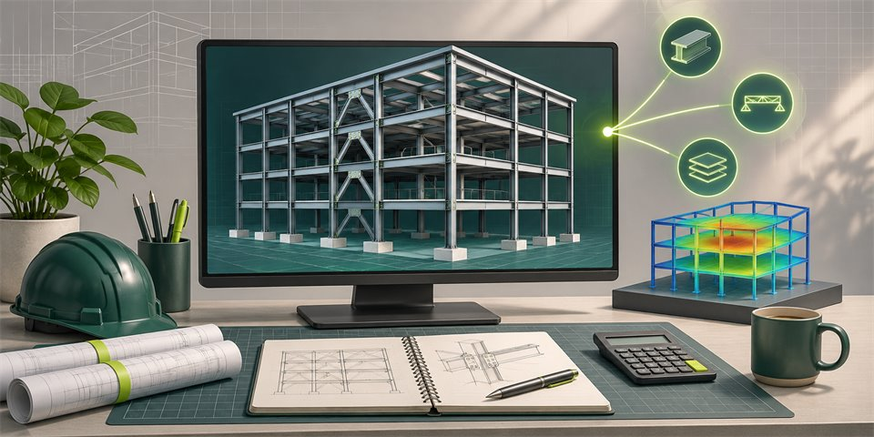

01SAP2000STEEL FRAME
قاب فولادی
ابزارهای اعضای فولادی، گزارشگیری تیر و بررسی خستگی؛ در امتداد گردشکار SAP2000.
از مدل سازه تا گام بعدی طراحی؛ ابزارهای تخصصیتان را در یک محیط منظم کنار هم داشته باشید. با تمرکز بیشتر بر مهندسی، نه جابهجایی اطلاعات.

کل مجموعه یا فقط ابزار موردنیازتان؛ ماژولهای SKYRoN برای بخشهای مشخصی از کار مهندسی طراحی شدهاند.

01SAP2000ابزارهای اعضای فولادی، گزارشگیری تیر و بررسی خستگی؛ در امتداد گردشکار SAP2000.

02ASCE/SEI 7-22ورودیهای قابلبررسی، کاتالوگ سیستمهای لرزهای و پیشنمایش محاسبات در یک مسیر روشن.

03FOUNDATIONاز تعریف هندسه و دادههای طراحی مخزن تا گردشکار خروجی به SAFE.

04SAP2000 → SAFEانتخاب حالتهای بار، پیشنمایش واکنشها و نگاشت به الگوهای بار SAFE؛ با تأیید شما.

05DETAILSدسترسی منظم به رابط و دادههای مرتبط با اتصالات تیر، در محیط کاری نرمافزار.

06ASSISTANTدسترسی به دستیار در فضای کار؛ با قابلیتهایی که بر اساس تنظیمات و ابزارهای فعال در دسترساند.
ابزار، همراه قضاوت مهندسی است؛ نه جایگزین آن. ورودیها و خروجیها باید با مبانی طراحی و شرایط پروژه تطبیق داده شوند.
یک نمونه از جریان کار Model Builder؛ از انتخاب اطلاعات در SAP2000 تا انتقالِ بررسیشده به SAFE.
حالتهای بار موردنیاز را از SAP2000 انتخاب کنید و اطلاعات ورودی را پیش از ادامه بررسی کنید.
SELECT / INPUTپیشنمایش واکنشها را ببینید و نگاشت حالتها به الگوهای بار SAFE را کنترل کنید.
PREVIEW / MAPانتقال تنها پس از بررسی و تأیید شما انجام میشود. مسیر فعال فعلی، SAP2000 به SAFE است.
CONFIRM / TRANSFERداشبورد، پروژهها و ماژولها را کنار هم قرار میدهد؛ تا برگشتن به کار، ادامهٔ همان مسیر قبلی باشد.
دسترسی به پروژههای اخیر و بخشهای کاری، از داشبورد.
بستههای قابلانتقال .skyron برای نگهداری و جابهجایی اطلاعات پروژه.
ابزارهای تخصصی در یک محیط کاری منظم، بهجای مسیرهای پراکنده.
برای بررسی SKYRoN در جریان کار خودتان، بتای ۱۴روزه را درخواست کنید. فقط یک ابزار میخواهید؟ ماژولهای موردنیازتان را انتخاب کنید.
از علاقهٔ شما به SKYRoN ممنونیم. برای هماهنگی دسترسی و مراحل بعد، از طریق ایمیل با شما در تماس خواهیم بود.
Suggest a practical tool, a new feature, or a way to improve your workflow. If your suggestion is reviewed and added to SKYRoN, you’ll receive three months of free subscription.
فرم درخواست را تکمیل کنید. پس از بررسی، اطلاعات مربوط به نصب، شرایط دسترسی و شروع دورهٔ ۱۴روزه از طریق ایمیل با شما هماهنگ میشود. ارسال فرم بهتنهایی به معنی فعال شدن دسترسی نیست.
بله. گزینهٔ «ماژول انتخابی» را در فرم انتخاب کنید و یک یا چند ماژول موردنیاز را مشخص کنید. دربارهٔ دسترسی و شرایط همان ماژولها با شما هماهنگ خواهد شد.
خیر. این صفحه برای معرفی SKYRoN و ثبت درخواست است. SKYRoN یک نرمافزار دسکتاپ ویندوزی است. اتصال به SAP2000 یا SAFE به نصب سازگار و تنظیمات محیط کاری نیاز دارد.
بله. مسئولیت تطبیق فرضیات، ورودیها، ضوابط و خروجیها با پروژه بر عهدهٔ مهندس است. امکانات دستیار AI نیز تابع تنظیمات و ابزارهای فعال نسخهٔ مورد استفاده هستند.